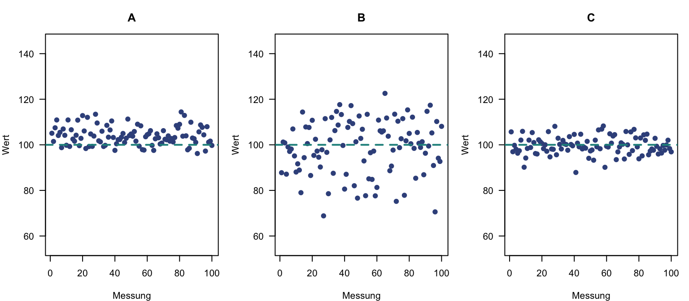

5 Klassische Testtheorie
WichtigWork in Progress
Dieses Kapitel wird derzeit intern überarbeitet. Aufgaben, Daten und Lösungen können sich noch ändern. Bitte bearbeiten Sie die Aufgaben erst, wenn die Überarbeitung abgeschlossen ist und dieser Hinweis entfernt wurde.
Aufgabe 1 (Messfehler) In der Klassischen Testtheorie (KTT) wird jeder beobachtete Messwert \(X\) zerlegt in einen wahren Wert \(T\) und einen Messfehler \(E\):
\[ X = T + E \]
Der wahre Wert \(T\) ist definiert als der Erwartungswert der beobachteten Messwerte einer Person über hypothetisch unendlich viele Messwiederholungen: \(T = \mathbb{E}(X)\). Der Messfehler \(E\) beschreibt die zufällige Abweichung des Einzelmesswertes vom wahren Wert, wobei \(\mathbb{E}(E) = 0\) gilt.
Abbildung 1 zeigt die Ergebnisse von wiederholten Messungen mit einem Messinstrument unter drei verschiedenen Bedingungen (A, B, C). Der wahre Wert beträgt \(T = 100\).
- Auf welcher der Abbildungen ist ein systematischer Messfehler zu sehen? Begründen Sie Ihre Antwort.
TippLösung
Abbildung A: Die Messwerte liegen im Mittel über \(T = 100\).
- Finden Sie jeweils ein Beispiel für eine wiederholte Messung, die zu den Bedingungen der Abbildungen A, B und C passt.
TippLösung
- A: Reaktionszeittest mit einer Geräteverzögerung, sodass alle Reaktionszeiten zu lang erfasst werden.
- B: Reaktionszeittest an verschiedenen Tagen unter stark wechselnden Bedingungen (nach dem Aufstehen, nach dem Sport, nach Koffein, nach einer schlechten Nacht).
- C: Reaktionszeittest in kurz aufeinanderfolgenden Durchgängen (Trials) mit leichten Aufmerksamkeitsschwankungen.
- Begründen Sie, warum es innerhalb von psychologischen Messungen (z. B. Leistungs- und Persönlichkeitstests) oft problematisch ist, wenn man eine Messung wiederholt mit demselben Messinstrument durchführt.
TippLösung
- Erinnerungseffekte
- Übungseffekte
- Reaktivität bzw. Sensibilisierung (z. B. sozial erwünschtes Antworten)
- echte Veränderung des Merkmals zwischen den Messzeitpunkten
Aufgabe 2 (Einflüsse auf die Messung: Anwendungsbeispiel) Sie sind Testleiter:in in einem Assessment-Center eines großen Unternehmens. Gemeinsam mit mehreren Helfer:innen führen Sie bei \(n = 60\) Bewerber:innen am ersten Tag einen Konzentrationstest und am Folgetag einen Intelligenztest durch. In einem Briefing vor der Testung betonen Sie die Wichtigkeit standardisierter Durchführungsinstruktionen, z. B. für den Konzentrationstest:
„Beim Konzentrationstest ist es wichtig, dass Sie allen Bewerber:innen ausdrücklich sagen, sie sollen so schnell und genau wie möglich arbeiten.“
Beurteilen Sie jeweils, ob es sich um einen systematischen oder unsystematischen Einfluss auf die Messung handelt. Begründen Sie kurz.
- Eine Person hat die Nacht vor dem zweiten Tag des Assessment-Centers schlecht geschlafen und erzielt daher beim Intelligenztest einen niedrigeren Testwert, als es ihrer tatsächlichen Fähigkeit entspricht.
- Am ersten Tag der Testung werden im angrenzenden Gebäude Bauarbeiten durchgeführt, sodass sich die Bewerber:innen weniger gut konzentrieren können.
- Bei einer Person funktioniert der Kugelschreiber, mit dem sie den Konzentrationstest bearbeitet, nicht richtig, sodass sie weniger Aufgaben schafft.
TippLösung
- Unsystematisch: Die Müdigkeit betrifft nur diese eine Person in dieser einen Testsituation.
- Systematisch: Die Störung betrifft alle Bewerber:innen des ersten Tages gleichermaßen und wirkt in dieselbe Richtung.
- Unsystematisch: Die Störung betrifft nur diese eine Person und ist an ihre individuellen Umstände gebunden.
Beim Debriefing gesteht Ihnen ein Helfer, dass er versehentlich von den Anweisungen des Konzentrationstests abgewichen ist. Er hat lediglich kommuniziert: „Die Bewerber:innen sollen so genau wie möglich arbeiten“ – den Hinweis auf die Geschwindigkeit hat er vergessen.
- Um welche Art von Einfluss auf die Messung handelt es sich dabei?
TippLösung
Um einen systematischen Messfehler, denn alle Bewerber:innen der Gruppe sind betroffen.
- Begründen Sie, wie sich dieses Versäumnis auf die Reliabilität und die Validität der Testergebnisse des Konzentrationstests ausgewirkt haben könnte.
TippLösung
Die Reliabilität sinkt nicht zwingend, weil der Fehler bei allen ähnlich wirkt. Die Validität ist beeinträchtigt, weil nur die Genauigkeit und nicht mehr die Geschwindigkeit erfasst wird.
- Ist der Vergleich der Konzentrationsleistung zwischen den Bewerber:innen dieser Gruppe noch möglich? Und wäre ein Vergleich mit einer anderen Kohorte bzw. der Grundgesamtheit (Normstichprobe) noch sinnvoll?
TippLösung
Innerhalb der Gruppe eingeschränkt möglich (die Rangfolge bleibt erhalten, bedeutet aber inhaltlich etwas anderes). Der Vergleich mit der Normstichprobe ist nicht sinnvoll, weil die Normen auf standardisierter Durchführung beruhen.
- Wie gehen Sie als Testleiter:in mit dieser Situation um?
TippLösung
Test mit korrekter Instruktion wiederholen oder, falls das nicht möglich ist, die Ergebnisse gesondert dokumentieren (ggf. nicht als Entscheidungsgrundlage verwenden).
Stellen Sie sich nun vor, Sie möchten die Korrelation der Intelligenz- und Konzentrationswerte für die Bewerber:innen dieser Kohorte berechnen. Nehmen Sie an, die fehlende Instruktion hätte sich bei jeder Bewerberin und jedem Bewerber gleich ausgewirkt, sodass sich die Testwerte des Konzentrationstests lediglich um einen konstanten Wert \(c = 5\) nach unten verschoben hätten. Tabelle 1 zeigt die Werte von 10 Bewerber:innen exemplarisch. Die Korrelation der Originalwerte beträgt \(r(IQ, K) = 0.60\).
| Person | IQ | \(K\) | \(K' = K - 5\) |
|---|---|---|---|
| 1 | 105 | 82 | 77 |
| 2 | 98 | 87 | 82 |
| 3 | 112 | 76 | 71 |
| 4 | 95 | 60 | 55 |
| 5 | 108 | 93 | 88 |
| 6 | 101 | 90 | 85 |
| 7 | 118 | 95 | 90 |
| 8 | 92 | 76 | 71 |
| 9 | 110 | 91 | 86 |
| 10 | 100 | 70 | 65 |
- Welche Auswirkung hat die Verschiebung um die Konstante \(c = 5\) auf die Korrelation zwischen Intelligenz- und Konzentrationswerten? Begründen Sie Ihre Antwort.
HinweisHinweis
Sie müssen hier keine Korrelation ausrechnen.
TippLösung
Keine: Die Korrelation bleibt bei \(r(IQ, K') = r(IQ, K) = 0.60\). \(K'\) ist eine lineare Transformation von \(K\), es gilt \(r(K, K') = 1\). Eine Konstante ändert weder Varianz noch Kovarianz, sondern nur das Niveau (die Mittelwerte).
Aufgabe 3 (Definition der Reliabilität in der KTT) In Aufgabe 1 haben Sie gesehen, dass sich jeder beobachtete Messwert \(X\) einer Person aus ihrem wahren Wert \(T\) und einem Messfehler \(E\) zusammensetzt: \(X = T + E\). Dabei ist \(T\) der Erwartungswert der Messwerte über hypothetisch unendlich viele Messwiederholungen und \(E\) die zufällige Abweichung davon mit \(\mathbb{E}(E) = 0\).
Betrachtet man nicht eine einzelne Person, sondern viele Personen, unterscheiden sich die beobachteten Messwerte, weil sich die wahren Werte unterscheiden und weil Messfehler hinzukommen. Da \(\text{Cov}(T, E) = 0\), gilt für die Varianzen:
\[ \text{Var}(X) = \text{Var}(T) + \text{Var}(E). \]
Die Reliabilität ist definiert als der Anteil der wahren Varianz an der beobachteten Gesamtvarianz:
\[ \text{Rel} = \frac{\text{Var}(T)}{\text{Var}(X)} = 1 - \frac{\text{Var}(E)}{\text{Var}(X)}. \]
- Vervollständigen Sie den folgenden Satz zur Interpretation der Reliabilität: Die Reliabilität gibt an, wie gut ein Test _____ Personen hinsichtlich ihrer _____ Merkmalsausprägung differenziert. Je mehr der beobachteten Varianz auf wahre Unterschiede zurückgeht (und je weniger auf Messfehler), desto _____ ist die Reliabilität.
TippLösung
zwischen, wahren, höher
- Welche Auswirkung hat es auf die Reliabilität, wenn sich die True-Score-Varianz \(\text{Var}(T)\) erhöht (bei gleichbleibender Fehlervarianz)?
TippLösung
Die Reliabilität steigt.
- Welche Auswirkung hat es auf die Reliabilität, wenn sich die Fehlervarianz \(\text{Var}(E)\) erhöht (bei gleichbleibender True-Score-Varianz)?
TippLösung
Die Reliabilität sinkt.
- Welchen minimalen und maximalen Wert kann die Reliabilität annehmen? Wie können diese Extremwerte interpretiert werden?
TippLösung
Die Reliabilität liegt in \([0, 1]\). Bei 0 geht die gesamte Varianz auf Messfehler zurück, bei 1 gibt es keinen Messfehler.
- Was bedeutet es inhaltlich, wenn die Fehlervarianz genauso groß ist wie die True-Score-Varianz, d. h. \(\text{Var}(E) = \text{Var}(T)\)? Berechnen Sie die Reliabilität für diesen Fall.
TippLösung
Die Hälfte der beobachteten Varianz geht auf Messfehler zurück: \(\text{Rel} = 0.50\).
- Angenommen, Sie setzen den Intelligenztest aus Aufgabe 2 nur bei einer leistungshomogenen Teilgruppe ein (z. B. nur bei Personen mit Abiturnote 1.0 bis 1.5). Welche Auswirkung auf die Reliabilität erwarten Sie, unter der Annahme, dass die Fehlervarianz in dieser homogeneren Stichprobe gleich bleibt?
TippLösung
Die Reliabilität sinkt, weil \(\text{Var}(T)\) kleiner wird.
- In der Praxis ist der wahre Wert \(T\) einer Person unbekannt und damit auch \(\text{Var}(T)\). Die Reliabilität lässt sich deshalb nicht direkt nach der Formel berechnen. Welche Möglichkeiten kennen Sie, die Reliabilität eines Tests zu schätzen?
TippLösung
- Retest-Reliabilität: Korrelation zweier Messungen mit demselben Test
- Paralleltest-Reliabilität: Korrelation zweier paralleler Testformen
- Testhalbierungs-Reliabilität: Korrelation zweier Testhälften (mit Spearman-Brown-Korrektur)
- Interne Konsistenz, z. B. Cronbachs \(\alpha\) oder McDonalds \(\omega\)
Aufgabe 4 (Messmodelle der KTT) Liegen zur Messung eines latenten Konstrukts mehrere Messungen vor (z. B. Items), kann überprüft werden, ob diese dasselbe latente Konstrukt erfassen, indem die Gültigkeit eines angenommenen Messmodells empirisch überprüft wird. In der Modellgleichung wird die True-Score-Variable \(\tau_i\) eines Items \(i\) als Funktion der latenten Variablen \(\eta\) beschrieben:
\[ \tau_i = \alpha_i + \lambda_i \cdot \eta, \]
wobei \(\alpha_i\) der Leichtigkeitsparameter (Interzept) und \(\lambda_i\) der Diskriminationsparameter (Faktorladung) ist. Die beobachtete Itemvariable \(x_i\) ergibt sich als
\[ x_i = \alpha_i + \lambda_i \cdot \eta + \varepsilon_i. \]
Jede Itemantwort \(x_i\) ist damit ein Testwert im Sinne der KTT: Sie setzt sich aus dem wahren Wert \(\tau_i\) und dem Messfehler \(\varepsilon_i\) zusammen, \(x_i = \tau_i + \varepsilon_i\). Dabei wird angenommen, dass wahrer Wert und Messfehler unkorreliert sind: \(\text{Cov}(\tau_i, \varepsilon_i) = 0\).
Die fünf Messmodelle der KTT, die Sie in der Vorlesung kennengelernt haben, unterscheiden sich darin, welche Restriktionen sie an die Parameter \(\alpha_i\), \(\lambda_i\) und \(\text{Var}(\varepsilon_i)\) stellen. Daraus ergeben sich unterschiedliche Konsequenzen für Itemvarianzen, Itemkovarianzen und Itemmittelwerte (Moosbrugger & Kelava, 2020, Kapitel 13).
- Alle fünf Messmodelle teilen drei gemeinsame Annahmen. Nennen Sie diese.
TippLösung
- Unidimensionalität: Alle Items messen dasselbe latente Konstrukt \(\eta\).
- Linearität: Der Zusammenhang zwischen \(\eta\) und den True Scores \(\tau_i\) ist linear.
- Unkorrelierte Messfehler: \(\text{Cov}(\varepsilon_i, \varepsilon_k) = 0\) für \(i \neq k\).
- Vervollständigen Sie Tabelle 2 für die fünf Messmodelle, die Sie in der Vorlesung kennengelernt haben. Tragen Sie für jeden Parameter ein, ob er über die Items hinweg variabel (itemspezifisch frei) oder identisch (für alle Items gleich) ist. Leiten Sie dann die Konsequenzen für Itemvarianzen, Itemkovarianzen und Itemmittelwerte ab.
HinweisHinweis
Die Itemvarianz ergibt sich aus \(\text{Var}(x_i) = \lambda_i^2 \cdot \text{Var}(\eta) + \text{Var}(\varepsilon_i)\), die Itemkovarianz aus \(\text{Cov}(x_i, x_k) = \lambda_i \cdot \lambda_k \cdot \text{Var}(\eta)\) und der Itemmittelwert aus \(\mathbb{E}(x_i) = \alpha_i + \lambda_i \cdot \mathbb{E}(\eta)\).
| Messmodell | \(\alpha_i\) | \(\lambda_i\) | \(\text{Var}(\varepsilon_i)\) | Itemvarianzen | Itemkovarianzen | Itemmittelwerte |
|---|---|---|---|---|---|---|
| \(\tau\)-kongenerisch | ||||||
| essentiell \(\tau\)-äquivalent | ||||||
| \(\tau\)-äquivalent | ||||||
| essentiell \(\tau\)-parallel | ||||||
| \(\tau\)-parallel |
TippLösung
| Messmodell | \(\alpha_i\) | \(\lambda_i\) | \(\text{Var}(\varepsilon_i)\) | Itemvarianzen | Itemkovarianzen | Itemmittelwerte |
|---|---|---|---|---|---|---|
| \(\tau\)-kongenerisch | variabel | variabel | variabel | variabel | variabel | variabel |
| essentiell \(\tau\)-äquivalent | variabel | identisch | variabel | variabel | identisch | variabel |
| \(\tau\)-äquivalent | identisch | identisch | variabel | variabel | identisch | identisch |
| essentiell \(\tau\)-parallel | variabel | identisch | identisch | identisch | identisch | variabel |
| \(\tau\)-parallel | identisch | identisch | identisch | identisch | identisch | identisch |
Literatur
Moosbrugger, H., & Kelava, A. (Hrsg.). (2020). Testtheorie und Fragebogenkonstruktion (3. Aufl.). Springer Berlin Heidelberg. https://doi.org/10.1007/978-3-662-61532-4